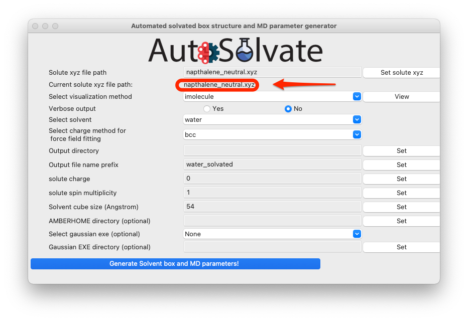

GUI Tutorial
The following code illustrates the usage of Autosolvate in the graphical user interface (GUI).
We will focus on an example system: naphthalene in water.
Prerequisites
Once you have AutoSolvate and all dependencies installed you will need the solute xyz file and then you are ready to go!
Make a working directory and create the naphthalene_neutral.xyz file, so that you can follow along on your own computer:
Step 1: Solvate system
The first step is putting the solute in the solvent box. First, make sure you have the autosolvate conda environment activated. Then in the terminal under your current working directory, type
>>> autosolvate
This will start the main GUI for AutoSolvate, as shown below.
{kind=link}
The three main functions of AutoSolvate are listed in the dropdown menu. From the dropdown menu, select the first task Solvated box and MD parameter generation, as shown below.
{kind=link}
Then click Go!:
{kind=link}
A new window will pop up, which is the GUI for creating the solvated box and MD force field parameters:
{kind=link}
You will then go through each item listed on the GUI. Some options/entries are pre-populated with the default setting. If you want to change from the default setting, enter your input in the corresponding entry and click Set.
Warning
When you change an entry, make sure to click the Set button to make the change take effect.
For some required entries, if you don’t enter anything and directly click Set, a dialog window will pop up and remind you to enter eligible inputs.
For example, you can leave the solute xyz file path blank and directly click on Set solute xyz. Then a new window will popup and ask you to select a file from your computer, as shown below.
{kind=link}
Once a valid file is selected, the path of that file will be shown on the GUI below the entry to confirm your selection:
{kind=link}
You can also visualize the structure of the xyz file to confirm that it is the correct molecule you want. Simply select the visualization method and click View:
{kind=link}
By default, we use the imolecule package to view the molecule, and you will see a new window in your default web browser, as shown below.
{kind=link}
You can also select the other molecule visualizer nglview, which will automatically launch a Jupyter notebook in your browser. You can then run the notebook and view the molecule with atom indices label, as shown below:
{kind=link}
For this example, because it is a neutral naphthalene molecule, the default settings will work OK, so you can skip setting the rest of the options, and directly click the last button to generate structure and force field files:
{kind=link}
A dialog window will pop up and let you know that the corresponding command line input has been generated, which will be executed to generate the files. You can click “OK”.
{kind=link}
Another dialog window will pop up and ask you whether you want to continue to execute the command and generate the files. You can click Cancel and no file will be generated, if you want to make changes to the settings. Otherwise, click Yes.
{kind=link}
After a few seconds, you will see a dialog window pop up with the message to show the generation has finished.

At the same time, in the original terminal where you launched AutoSolvate, and you will see information about each step of the structure and force field generation
{kind=link}
Step 2: MD Simulation
The second step is running molecular dynamics, which includes multiple steps with MM or QM/MM dynamics. We will show how to quickly enable automated MD input file generation and MD simulation execution from the graphical interface.
Assuming you just finished Step 1, now we can safely close the window for boxgen (you can also leave it there). In case you didn’t run Step 1, you can directly download the following files to make sure you can follow this section:
water_solvated.prmtop
water_solvated.inpcrd
Let’s focus back on the main GUI. This time select the second task: MD automation
{kind=link}
Then click Go!: A new window will pop up, which is the mdrun GUI for MD automation.
The mdrun GUI has many options categorized into 4 groups, about essential setting of the MD simulation, classical MM, QM/MM, and job control.
Don’t be scared by the many options. The only required options are filename, charge, and multiplicity (needed for QMMM), as shown in the green circles below.
{kind=link}
You will then go through each item listed on the GUI. Some options/entries are pre-populated with default setting. If you want to change from the default settings, enter your input in the corresponding entry and click Set.
Warning
When you change an entry, make sure to click the Set button to make the change take effect.
For some required entries, if you don’t enter anything and directly click Set, a dialog window will pop up and remind you to enter eligible inputs.
For example, you can leave the entry about file prefix for .inpcrd and .prmtop file blank, and directly click Set file prefix. Then a new window will popup and ask you to enter the valid system prefix, as shown below.
{kind=link}
Warning
The program will automatically check whether the file prefix you provided is valid, i.e., whether prefix.inpcrd and prefix.prmtop both exist. If not, the window will pop up again until you enter a valid file prefix there.
Once you enter a valid file prefix, the dialog will automatically close, and you can make other necessary changes to the options. For this neutral, singlet molecule, the default setting is OK. However, be careful that the QM/MM option is turned off by default because the required TeraChem package is not automatically installed with AutoSolvate, so the user may not necessarily have access to the QM/MM run with TeraChem. If everything looks good to you, you can directly go to click the last button to generate MD simulation inputs and execute MD.
{kind=link}
If you do want to run QM/MM, simply change the radio button to Yes (shown in the green circle below), and set corresponding options in the QM/MM control section.
{kind=link}
The most important option for QM/MM is the QM method, which is by default DFT with B3LYP functional. You can change it to other available options by choosing from the dropdown menu:
{kind=link}
Another very important feature is the dryrun mode, that means the GUI will only generate the MD input files, and save the commands to run Amber/sander MD simulations input bash script files runMM.sh and runQMMM.sh. The GUI will not directly execute Amber or Amber/TeraChem to run the MD simulations, because usually we expect the users to use the GUI on their desktop, which is not suitable for running long-time MD simulations. By using the dryrun mode, the user can get the needed files and scripts, and then copy them to high-performance computers to finish the simulation.
Therefore, the dryrun mode is by default turned on, as shown below:
{kind=link}
If everything looks good to you, you can click the last button to generate MD simulation inputs and execute MD. A dialog window will pop up and let you know that the corresponding command line input has been generated, which will be executed to generate the MD simulation files. You can click “OK”.
{kind=link}
Another dialog window will pop up and ask you whether you want to continue to execute the command and generate the files. You can click Cancel and no file will be generated, if you want to make changes to the settings. Otherwise, click Yes.
{kind=link}
If you selected dryrun mode, after a few seconds, you will see a dialog window pop up with the message to show the MD simulation generation has finished. If you selected to turn off dryrun mode, then AutoSolvate will call Amber/sander in the background and run the MD simulations, which may take minutes or hours to finish. But at the end you will also see a dialog window saying that the simulation has finished.
{kind=link}
At the same time, in the original terminal where you launched AutoSolvate, you will see information about each step of the MD simulation
{kind=link}
Step 3: Microsolvated cluster extraction
The last step is extracting a cluster from the previous results that can be used for microsolvation.
Let’s focus back on the main GUI. This time select the third task: Microsolvated cluster extraction
{kind=link}
Then click Go!: A new window will pop up, which is the clustergen GUI for MD automation.
{kind=link}
The clustergen GUI has very simple interface, only requesting 4 entries. First select the .prmtop file and trajectory .netcdf file by directly enter the files names in the entries and clicking Set, or leave the entries blank and directly clicking the Set buttons. You will be prompted with a dialog to select the files from your computer.
{kind=link}
Here let’s select the water_solvated.prmtop file generated in Step 1, and a trajectory file nap_neutral_water-heat.netcdf generated in Step 2.
In case if you did not run the MD simulation in Step 2, you can directly download the files here:
After selection, the file names will automatically update in the entries. Set the rest of the options to control how the solvent shell is cut out.
{kind=link}
Warning
When you change an entry, make sure to click the Set button to make the change take effect.
Then click the last button to start cluster extraction. You will first see the following dialog window:
{kind=link}
After clicking OK, another dialog window will pop up and ask you whether you want to continue to execute the command and generate the files. You can click Cancel and no file will be generated, if you want to make changes to the settings. Otherwise, click Yes.
{kind=link}
After a few seconds, you will see a dialog window pop up with the message to show the microsolvated cluster extraction has finished.
{kind=link}
At the same time, in the original terminal where you launched AutoSolvate, you will see information about the extraction process.
{kind=link}
Warning
The naming of the microsolvated clusters is based on the name of the .prmtop file, not the trajectory file, so the names will not change between runs. This means that if you run the clustergen command twice, the new coordinates will overwrite the old ones (if the frame number is the same). Therefore, if you want to extract clusters from multiple MD steps (like QMMM heat and QMMM NVT), you need to either move or rename the files before you run the command again.